Assessment State Machine
Managing Assessment State Effectively
Christopher R. Bilger
January 14th, 2026
Agenda
- Problem Statement
- State Machine Overview
- Implementation Details
- Benefits and Outcomes
- Conclusion + Q&A

Problem Statement
- Complex assessment lifecycle with multiple states
- Challenges in managing transitions and ensuring consistency
- Need for a structured approach to handle state changes
- Consistency for analytics and reporting
- Difficulty in scaling changes in the assessment
Complex Assessment Lifecycle
- No clear boundary between happy, terminal, and error states
- Numerous events triggering state transitions
- Interdependencies between states and events
Challenges in Managing Transitions
- Inconsistent handling of state changes
- Increased risk of errors and mismanagement
- Difficulty in tracking state history and debugging issues
Need for a Structured Approach
- Clear definition of states and transitions
- Standardized handling of events
- Improved maintainability and scalability
Consistency for Analytics & Reporting
- Standardized logging, monitoring, and reporting
- Reliable data for performance metrics
- Accurate tracking of assessment outcomes
- Enhanced decision-making based on consistent data
Difficulty in Scaling Changes
- Complexity in updating state logic
- Increased effort for testing and validation
- Risk of introducing inconsistencies during changes
- Separation of concerns and modularity challenges
State Machine Overview
- Definition of a finite state machine (FSM)
- States involved in the assessment process
- Transitions between states based on events
- Responsibilities and actions of a state machine
What is a Finite State Machine?
- Set of data structures and design patterns
- Consists of a finite number of discrete states
- Used to model complex behaviors in a structured manner
- Transitions between states are triggered by events
- Provides clarity and predictability in system behavior
- Facilitates easier debugging and maintenance
States in the Assessment Process
- Initial State: Assessment not started
- In Progress: Assessment is being conducted
- Completed: Assessment has been finished
- Terminated: Assessment was terminated before completion
- Error: An error occurred during the assessment process
Screen Transitions Based on Events
- Root event tells the state machine to go to a new screen based on the current screen and some additional context
- Events include user actions (e.g., start, submit, terminate) and system events (e.g., error occurrence)
- Each event triggers a transition from one state to another, updating the assessment status accordingly
State Machine Navigation Observers
| Observer | Purpose | Trigger |
|---|---|---|
| FreshpaintAnalyticsObserver | Track screen views and terminations | Every navigation |
| DatadogObserver | RUM tracking and performance monitoring | Every navigation |
| ConsoleLogObserver | Development debugging (non-prod only) | Every navigation |
| ReduxPersistorObserver | Control state persistence timing | Specific screens |
| ProgressObserver | Calculate and track assessment progress | Step screens |
| DocumentUpdateObserver | Update database on termination | Terminations |
State Machine Navigation Handlers
- Reusable components for verifying context between screen navigation
-
Validate navigation rules and conditions
- Handling invalid navigation attempts gracefully
-
Ensuring prerequisites are met before transitioning to a new screen
- Age check
- State check
- Guardian checks
- Schizophrenia check
- Suicide-risk check
State Machine Navigation Strategies
- Determine the appropriate navigation path based on current state and events
- Implement fallback strategies for unexpected states or events
- Optimize navigation for user experience and performance
- Modular and extensible design such that reusability is high between intake and referral assessments
Implementation Details
- Four core design patterns working together
- Type-safe navigation context
- Reusable validation handlers
- Pluggable observer architecture
Architecture Overview
Flow: User Action → Context → State → Strategy → Handlers → Observers → Result
Core Design Patterns
State Pattern
Manages flow behavior (Normal, Interrupted, Terminal)
Strategy Pattern
Screen-specific navigation logic
Chain of Responsibility
Composable validation handlers
Observer Pattern
Decoupled side effects (analytics, logging)
Result: Behavior changes without conditionals, isolated testable components
Pattern Example: Chain of Responsibility
abstract class BaseNavigationHandler {
private nextHandler: INavigationHandler | null = null;
setNext(handler: INavigationHandler) { this.nextHandler = handler; }
protected next(context) { return this.nextHandler?.handle(context); }
}
class AgeValidationHandler extends BaseNavigationHandler {
handle(context: NavigationContext) {
if (isUnder18 && context.isGuardian === false) {
return this.terminate(Screens.MinorTermination);
}
return this.next(context); // Continue chain
}
}
// Chain handlers together
new AgeValidationHandler()
.setNext(new StateValidationHandler())
.setNext(new GuardianRequirementHandler())
.setNext(new SuicideRiskCheckHandler());
Extensibility: Adding Features
New Screen: Create strategy + register
registry.set(Screens.NewScreen, new NewScreenStrategy());
New Validation: Create handler + chain
chain.setNext(new CustomValidationHandler());
Extensibility: Adding Features (Cont.)
New Side Effect: Create observer + register
stateMachine.addObserver(new CustomObserver());
Analytics, logging, persistence handled automatically
Testing Strategy
Unit Testing
- Test each pattern in isolation
- Mock context and dependencies
- Fast, deterministic
Integration Testing
- Test full navigation flows
- Verify observer notifications
- End-to-end scenarios
Result: ~98% test coverage of all state machine code
Key Takeaways: Implementation
Pattern Synergy
- State manages flow
- Strategy handles screens
- Chain validates rules
- Observer tracks effects
Development Benefits
- Add features in hours
- Compose validations
- Plug in observers
- Test in isolation
A maintainable, extensible, testable architecture
Benefits and Outcomes
Before
- Scattered navigation logic
- Inconsistent validation
- Manual analytics
- Hard to test
After
- Centralized state machine
- Reusable handlers
- Automatic tracking
- Isolated tests
Real-World Impact: Metrics
Test Coverage
~98% overall
State machine unit test coverage
Test Coverage
+42% assessment
Unit test coverage increase
Code Reuse
~75%
Shared between assessments
Navigation Bugs
Zero
Since implementation
Example: Faster Development
Task: Add guardian consent flow for minors
Before
- Update multiple files
- Add conditionals
- Manual analytics
- Test all flows
- ~2-3 days
After
- Create handler
- Register strategy
- Automatic tracking
- Test in isolation
- ~3-4 hours
~80% reduction in development time
Lessons Learned
1. Pattern Selection Matters
Four patterns working together created powerful synergy
2. Incremental Migration Works
Migrated screen-by-screen without disruption
3. Testing Investment Pays Off
Comprehensive tests enabled confident refactoring
4. Developer Buy-In Essential
Architecture reviews and pair programming accelerated adoption
Future Enhancements
- Visual state machine editor - Generate code from diagrams
- Enhanced error recovery - Automatic retry and resume
Conclusion + Q&A
- Problem Statement
- State Machine Overview
- Implementation Details
- Benefits and Outcomes
- Q&A
Additional Resources on Finite State Machines
Powered By
- A single, static webpage.
- reveal.js
- highlight.js